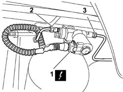
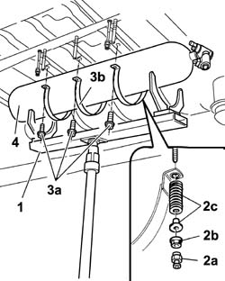

1042A72 CENTRAL CYLINDER OF CNG CYLINDER UNIT R R
- Path
- Procedures > 10 ENGINE UNIT > 1042 METHANE GAS CANNISTER AND TUBES > 1042A METHANE GAS CANNISTER AND TUBES FOR RE-CHARGING > 1042A72 CENTRAL CYLINDER OF CNG CYLINDER UNIT R R
- Kind
- repair procedure (removal / refitting; the operation number is the code)
- Applies to
- engines: 1.6 16v; production: da 06/04; only with equipment: BIPOWER
- Interactive page
- https://sloeber94.github.io/elrnDB-fMltpl/en/#/186007244
Applies to: engines: 1.6 16v; production: da 06/04; only with equipment: BIPOWER
 Removing
Removing
 Refitting
RefittingPosition the vehicle on a lift.
Proceed with draining the high pressure circuit following the instructions in the specific operation
Op. 1042A02 C.N.G. - FUEL SYSTEM SAFETY CHECK
Op. 1042E60 CNG CYLINDER UNIT PROTECTION SEAL - R R
Op. 1042A70 LEFT CYLINDER OF CNG CYLINDER UNIT R R
1. Disconnect the electrical connection of the methane cut-off solenoid on the central cylinder.
Description | Connector |
|---|---|
Methane supply solenoid |
2. Disconnect the CNG supply pipe connetor on the central cylinder solenoid.
3. Disconnect the connector of the pipe connected to the right side cylinder on the central cylinder solenoid.

Applies to: engines: 1.6 16v; production: da 06/04; only with equipment: BIPOWER
Arrange the cylinder support tool on a hydraulic column lift able to take the weight of the cylinder.
Description | Code |
|---|---|
Support for CNG cylinders | 1.870.732.000 |
1. Position the tool for supporting the cylinder during the removal operation beneath the central cylinder.
Description | Code |
|---|---|
Support for CNG cylinders | 1.870.732.000 |
2. Undo bushings (2a) on the lower guard bolt housing, nuts (2b) and recover the retaining bushes and springs (2c) on the innert side of the cylinder retaining collars.
3. Undo bolts (3a) on the outer side and withdraw the cylinder support collars (3b).
4. Lower the hydraulic lift and remove the central cylinder from its seat on the body.
With the aid of a second operator, remove the cylinder from the support tool and arrange on suitable stands.

Applies to: engines: 1.6 16v; production: da 06/04; only with equipment: BIPOWER
Applies to: engines: 1.6 16v; production: da 06/04; only with equipment: BIPOWER
Refitting
RemovingWith the aid of a second operator, position the cylinder on the support tool.
Description | Code |
|---|---|
Support for CNG cylinders | 1.870.732.000 |
Raise the tool and position the cylinder in its underbody housing compartment.
Position the retaining collars and fit the bolts on the outer side, springs, bushes and nuts on the inner side.
Tighten the bolts on the outer side securing the cylinder support collars to torque.
Tighten the nuts on the inner side securing the cylinder support collars to torque.
Tighten the cylinder lower guard bolt housing bushings.
Remove the cylinder support tool.
Connect the CNG supply pipe connetor to the central cylinder solenoid.
Connect the connector of the pipe connected to the right side cylinder to the central cylinder solenoid.
Connect the electrical connection of the methane cut-off solenoid to the central cylinder.
Description | Connector |
|---|---|
Methane supply solenoid |
Op. 1042A70 LEFT CYLINDER OF CNG CYLINDER UNIT R R
Move the CNG cut-off solenoids to open position by hand and check system is efficient.
Connect the Examiner diagnostic equipment in the "Active Diagnosis" ambient, select and carry out "Gas solenoid valve relay" item in order to allow the opening of the solenoid valves and the renewal of the CNG system operating pressure; read the pressure value on the sensor located on the pressure reduction unit in the engine compartment which should be greater than or equal to 14 bar, otherwise it will not be possible to switch from petrol to methane.
Op. 1042A06 C.N.G. - FUEL SYSTEM CHECK FOR ANY LEAKS USING ELECTRONIC DETECTOR FOLLOWING OPERATIONS
Topics linked from this page (6)
- 1042A02 C.N.G. - FUEL SYSTEM SAFETY CHECK
- 1042A06 C.N.G. - FUEL SYSTEM CHECK FOR ANY LEAKS USING ELECTRONIC DETECTOR FOLLOWING OPERATIONS
- 1042A20 INJECTION SYSTEM SOLENOID ON CYLINDER R R
- 1042A70 LEFT CYLINDER OF CNG CYLINDER UNIT R R
- 1042E60 CNG CANISTER ASSEMBLY SHIELD/PROTECTION / - R.R.
- L60 Methane supply solenoid